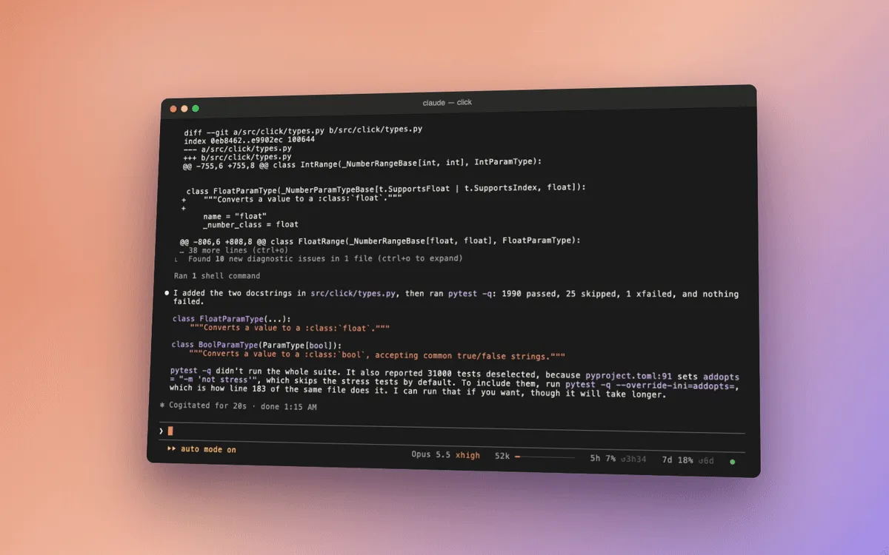

cells
Several edits and their test run in one step.
The moment
You ask Claude to change two small settings and check that the tests still pass.
Without cells
Claude reads the file, makes the first edit, makes the second, then runs the tests: four steps, and each one sends the whole conversation back to be read again. Or it writes a quick script that changes the files through the shell. That is cheap, but you see no diff, and /rewind can’t undo it.
With cells
Claude writes a short program, a cell, whose lines are the real tools: read, edit, run. The two edits and the test run happen in one step. Each edit still goes through Claude Code’s own edit tool, so you see the diff, your permission prompts apply, and /rewind undoes it.
Flip the switch and watch four steps fold into one.
- StepRead the file
await read('src/app.py') - StepFirst edit
await edit('src/app.py', 'retries = 3', 'retries = 5') - StepSecond edit
await edit('src/app.py', 'timeout = 10', 'timeout = 30') - StepRun the tests
const t = await sh('python -m pytest -x -q tests/test_app.py 2>&1')
await read('src/app.py')
await edit('src/app.py', 'retries = 3', 'retries = 5')
await edit('src/app.py', 'timeout = 10', 'timeout = 30')
const t = await sh('python -m pytest -x -q tests/test_app.py 2>&1')
return t.ok ? 'tests pass' : fold(t.out)Four steps, and each one reads the whole conversation again.One step, one read of the conversation. Each edit still shows as a diff, and /rewind undoes it.
What we measured
Of all the mods, cells saves the most. Take it out of the pack and the same jobs cost 9% more8.9% more expensive, 95% range 2.1 to 16.4% more expensive8.9% more expensive
95% range 2.1 to 16.4% more expensive
4 per condition on multi-step tasks, 2 on small ones
Opus 5.5, 13 Oct 2026; the feature job took 14.2 steps instead of 9.814.2 against 9.814.2 against 9.8
4 per condition
Opus 5.5, 13 Oct 2026.
Every measurement for cells
The dot is the measured change, the bar around it the 95% range, the upright line no change. Left of the line is cheaper or fewer.
- Taking cells out of the packthe pack without cells against the pack8.9% more expensive95% range 2.1 to 16.4% more expensive4 per condition on multi-step tasks, 2 on small ones. Opus 5.5, 13 Oct 2026
- Taking cells out, on multi-step workthe pack without cells against the pack16.3% more expensive95% range 5.4 to 29.5% more expensive4 per condition. Opus 5.5, 13 Oct 2026
- The feature's requests without cellsthe pack without cells against the pack14.2 against 9.84 per condition. Opus 5.5, 13 Oct 2026
- The pack without cells, against plain: the saving is gonethe pack without cells against plain Claude Code3.3% cheaper95% range from 8.7% cheaper to 2.4% more expensive4 per condition on multi-step tasks, 2 on small ones. Opus 5.5, 13 Oct 2026
- cells' chaining guidance, Haiku on small taskswith the chaining guidance against without18% fewer steps30 per arm. Haiku 5.5, 9 Oct 2026
- cells' guidance moved before the cache boundaryguidance as a shared system-prompt section against as it was1.0% more expensive95% range from 5% cheaper to 8% more expensive32 runs. Opus 5.5, 14 Oct 2026
- In 240 real sessions, files changed by script around the Edit toolBash scripts that changed files against Edit and Write calls5,996 against 2,720240 sessions
- Subagents get the pack's settings with their taskthe pack with cells' and seek's subagents option on against off17.6% cheaper95% range 14.0 to 21.0% cheaper20 per arm, 4 per task. Opus 5.5, its subagent Opus 5.5, 16 Oct 2026
- Subagents with the settings, on the features and the teststhe pack with cells' and seek's subagents option on against off21.8% cheaper95% range 17.4 to 26.0% cheaper20 per arm, 4 per task. Opus 5.5, its subagent Opus 5.5, 16 Oct 2026
- Subagents with the settings, on the explanationsthe pack with cells' and seek's subagents option on against off7.8% cheaper95% range 2.6 to 12.3% cheaper20 per arm, 4 per task. Opus 5.5, its subagent Opus 5.5, 16 Oct 2026
- A subagent's requests, without and with the settingsthe pack with cells' and seek's subagents option on against off10.0 to 6.920 per arm, 4 per task. Opus 5.5, its subagent Opus 5.5, 16 Oct 2026
- A subagent's Bash calls that chain several commands, without and with the settingsthe pack with cells' and seek's subagents option on against off88% to 99%20 per arm, 4 per task. Opus 5.5, its subagent Opus 5.5, 16 Oct 2026
- The settings in the subagent's task: arrivedsubagents whose task held the settings, option on20 of 2020 per arm, 4 per task. Opus 5.5, its subagent Opus 5.5, 16 Oct 2026
- How much of a summary repeats the conversation word for wordof a summary written ahead's text (17% and 20% in two of Claude Code's own summaries); the part a program could copy19%19 summaries. Opus 5.5, 19 Oct 2026
Tried for cells and dropped: Moving text before the cache boundary.
Where it doesn’t help
A cell only helps when Claude already knows its next few moves. Where each step depends on what the last one showed, it still takes them one at a time, and on a quick question there is nothing to fold.
Turn it on or off
/mods cells off turns it off, and mode: nudge keeps its guidance and its short notes, with no tool. Every option is in the README and SETUP.md; the code is in cells/.
In a real session


Play the recording